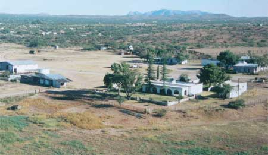
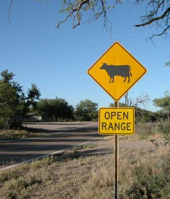

Arivaca Ranch .com
Arivaca, Arizona

Arivaca Arizona, and such a place it is...
There not far southwest of Tucson Arizona, out on a pleasant little road through the cactus and then up through the mesquite desert, is the small town of Arivaca Arizona.
Oh, be careful driving that picturesque road. Range country. Cattle have the right of way on the road. The stop sign just around the curve, might be walking toward you, in your lane, and have long horns. There are a lot of curves. There are a lot of cattle.
Arivaca has a rich history centered around a cienega, a refreshing wetland in the desert. After the less recorded local lifestyle for thousands of years, silver and gold mining became popular, then cattle ranching.
Arivaca city center is pretty much the mercantile store, post office, bar, art gallery, tire shop, two churches and some houses beside the cienega, at the T in the road arriving from behind you, going north to nowhere and south to no place. The other bar, coffee shop and other services are just outside city center. The sort of friendly quiet place where you wish you were living.
Arivaca Ranch is one of the cattle ranches in the area, distinguished by its cattle occasionally wandering through city center. The Arivaca Ranch House is back around a few turns in the road, up the gentle valley from the cienega in town.
The range rules state that if you prefer the critters to not fertilize your private property, you gotta fence them out. The town cattle are generally a civilized lot, and as welcome as the deer and coyotes. This is not a high stress, fast pace city.
There are a number of homes scattered through
the mesquite in the broad Arivaca valley. Nice community. 
Do not mind the occasional Mexican illegals hiking north through the draws at night. They are there to help train the Border Patrol guys sitting in the Border Patrol cars parked at the usual places. Then there are the smugglers with their horses and mules loaded with pot, sneaking through the same draws and washes, among the thickest mesquite. They too serve as training personnel for the Border Patrol guys. The illegals and smugglers offer another bit of local culture, which a person cannot find much further north from the Mexican border. Everybody gets along quite well with their respective interests.
Baboquivari, a prominent rock pinnacle, dominates the northwestern view. It has a long history of esthetic and local spiritual value.
When you visit the bar, do not believe the stories told by any of the cattle ranchers or cowboys trying to tell cattle ranching stories. They will tell you about cattle and horses and that stuff. Humor them. Dry range cattle ranching has less to do with cattle than it does with water. The cattle usually take care of themselves, except for the ones that slept through Cougar 101 class. The local ranching game is dependent upon water. Therefore the ranchers are actually hydrologists. They manage water. To manage the water, they are windmill repair guys, usually using bailing wire to repair the squeaky old rusty windmills that pump up a few little spurts of water every time a puff of breeze rolls down the otherwise dry wash.
The water holes, some with windmills and some collecting the rain runoff from the hills on the south side of the ranch, are called tanks, whether they are concrete tanks or just ponds. So locals talk about the named tanks to refer to locations, on account as where the water is, is where any activity is.
This is real cowboy country, on account as nothing has yet been able to replace the real cowboy on a horse. Only the local critters and horses can go where the cattle go in the rugged Arivaca country.
Nice hiking country. Beautiful wild flowers. Fascinating birds. A intriguing diversity of other interesting sights. Take a canteen.
And the ranchers like what they do. Give them a million dollars, and they will keep on ranching until it is all gone, much like gold miners.
If these words have not bored you enough, there is an Arivaca Ranch story at AlaskaStories.com/Stories5~Arivaca. Just the usual sort of Arivaca cattle round-up story told by some guy from Alaska, of all places.
Remember, the cattle have the right of way around Arivaca, which is the way it should be more places. Is that not so?
May The Horse Be With You.
Town
Ranch House area
Range area
Cattle
Windmills and tanks
Cactus
More cactus
Other plants
Wildlife
Links and contact